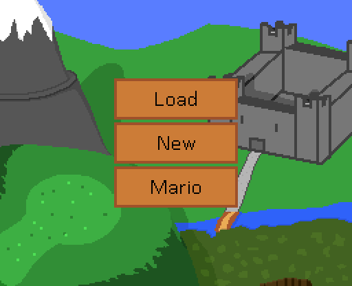
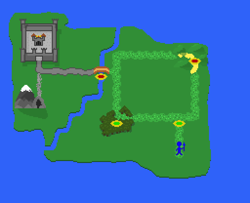
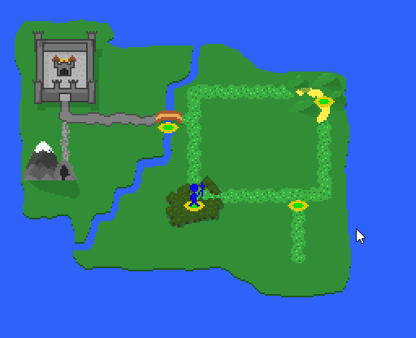

SDL Emblem
This project was originally a Mario clone for University Coursework. It was our first project with minimal guidance, in both gameplay direction and programming, as well as our first time creating an application on barebones SDL. The Mario game was left in because it was required and a good sandbox to experiment SDL features and extensions in, but the Turn Based Strategy section is where I put most of my attention and focus on.
It is very much inspired by Fire Emblem, in art and mechanics, but with simplified AI targeting and combat system.
Overworld
The overworld is made up of many Points of Interest for the Player to walk between. There are 6 points with a battle, indicated by yellow ringed icons, the Castle and the Cave. The Player must complete a level before they can pass through it, but not all levels are required to have been completed at the end of a split path. A grey level is unreachable, a red level is incomplete, and a green level has been completed. Green levels can be re-challenged.
Use WASD to move the character between PoIs. Pressing Escape will bring up a menu, and close it if it is open.
Each level before the bridge rewards a new unit upon first completion.
 Battle Mechanics
A battle is broken down into two turns; Player Phase and Enemy Phase. Each side takes turns moving and attacking with their units.
Each unit can move 3 spaces, but terrain such as trees take double the amount of movement points as normal and some terrain is blocked by the environment.
Hovering over a unit shows if it has terrain bonuses, and hovering over a unit when attacking will show the Weapon Triangle matchup.
Battles are single strike with no follow-ups or counter attacks, with some number fudging in favour of the unit with a Weapon Triangle advantage.
Damage is taken is equal to ((attacker's attack (if less than 5 and has advantage, +2) + bonuses) - (defender's defence + bonuses)) * (1.5 if advantage, 0.75 if disadvantage) rounded up.
The battle is won when the enemy is routed, and lost by letting all of your units be killed. It will load the last auto save on defeat.
Killing an enemy will reward the unit with experience equal to 2(defender’s level + 3 – attacker’s level), and after 10 points have been gained, the unit will level up.
Levelling up will increase its attack by 2-4 (or 2-5 for a bow unit), its defence by 2-3 (or 1-2 for a bow unit), and health total and max by 1-4.
Levels
There are 6 different levels to take on, in different themed areas. From a simple plain and a forest, to a bandit encampment in a cave and assaulting a castle.